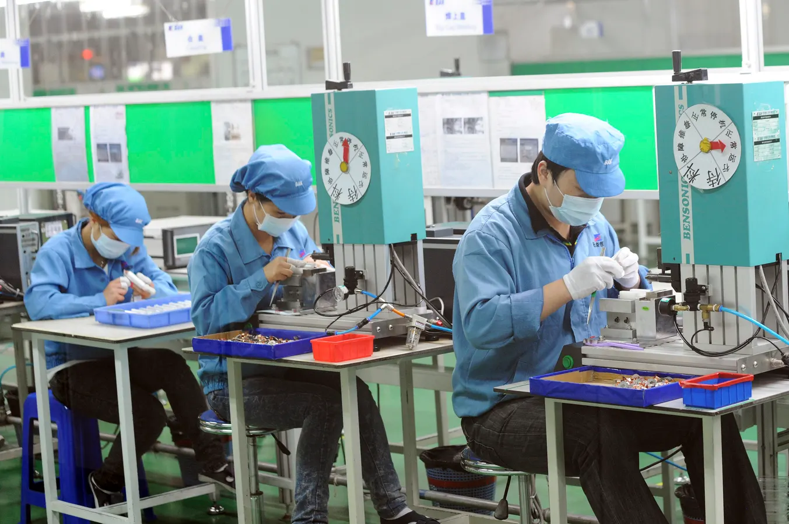
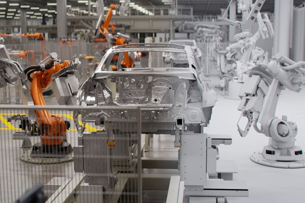
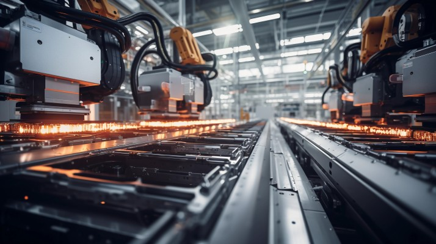

The landscape of battery manufacturing has undergone a remarkable transformation over the past few decades, evolving from manual labor-intensive processes to sophisticated smart factories. This evolution reflects advancements in technology and a significant shift in how we approach energy storage solutions, particularly in the context of electric vehicles (EVs) and renewable energy systems.
The Shift from Manual Labor to Automation
Historically, battery manufacturing relied heavily on manual labor, with workers performing repetitive tasks that were often time-consuming and prone to error. However, as demand for batteries surged—especially with the rise of electric vehicles—the industry began to embrace automation. This shift has led to increased efficiency, reduced production costs, and improved quality control.

Technological Advancements Driving Automation
- Smart Factories: The integration of Internet of Things (IoT) technologies has enabled the development of smart factories where machines communicate with each other and optimize production processes in real time. This enhances efficiency and allows for predictive maintenance, reducing downtime.
- Advanced Robotics: Robotics have become a staple in battery manufacturing, performing tasks such as assembly, quality inspection, and packaging with precision that surpasses human capabilities. This has led to faster production rates and improved safety conditions for workers.
- Data Analytics: Using big data analytics helps manufacturers monitor production processes and identify areas for improvement. By analyzing data from various stages of production, companies can make informed decisions that enhance productivity and reduce waste.

Recent Developments in Battery Manufacturing
The evolution of automation in battery manufacturing is supported by several recent developments:
- Government Support: Significant government funding is being directed towards enhancing domestic battery manufacturing capabilities. For example, India is implementing initiatives like the Production Linked Incentive (PLI) Scheme to promote local production of advanced chemistry cells (ACCs).
- Emerging Manufacturing Hubs: Countries like India are positioning themselves as emerging hubs for EV battery production. Investments from major corporations are flowing into the sector, with companies like Tata Group investing $1.58 billion to build lithium-ion cell plants.
- Innovative Battery Technologies: Research into new battery chemistries, such as solid-state and lithium-sulfur batteries, is gaining momentum. These technologies promise improvements in energy density and safety compared to traditional lithium-ion batteries.
- Sustainability Initiatives: The industry is increasingly focused on sustainable practices, including the use of recycled materials in battery production. Companies are investing in recycling technologies to recover valuable materials from used batteries.
- Modular Designs: Innovations like modular battery systems allow for rapid recharging by swapping out depleted cells at service stations. This could significantly reduce charging times for EVs.

The Future Landscape
As we look toward the future, several trends are likely to shape the evolution of automation in battery manufacturing:
- Increased Market Share for LFP Batteries: Lithium iron phosphate (LFP) batteries are expected to capture a larger share of the market due to their lower cost and enhanced safety features.
- Focus on Alternative Materials: Research is ongoing into alternative materials that can be used in battery production, such as sodium instead of lithium, which could alleviate resource scarcity issues.
- Investment in Recycling Technologies: With the growing demand for batteries, there is an increasing focus on recycling technologies that can recover critical materials from spent batteries.
- Global Collaboration: The future will likely see more collaborations between countries and companies aimed at sharing knowledge and technology to advance battery manufacturing capabilities globally.
In conclusion, the evolution of automation in battery manufacturing represents a significant milestone in our quest for sustainable energy solutions. As technology continues to advance and new challenges emerge, the industry is poised for further transformation that will enhance efficiency and sustainability while meeting the growing demand for energy storage solutions worldwide.